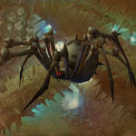
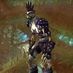
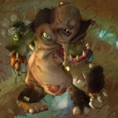
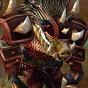
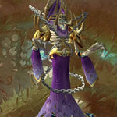

You can find the Razorfen Downs dungeon within Thousand Needles, Kalimdor.
The coordinates are (47.4,23.4)

Route:
Map 1
On the 1st boss to get the spider to come down use the Gong to the left.

Bosses:
1. Aarux2. Mordresh Fire Eye3. Mushlump4. Death Speaker Blackthorn5. Amnennar the Coldbringer

Quick Boss Tactics:/i Get pulled in by Web Strand, run away. Inflicts nature damage to players.

Quick Boss Tactics:/i Kill groups of skeletons. Interrupt Lava Burst. Boss summons fire mobs Blazing Servitors. Avoid fire balls falling around them. They create lines of fire between themselves, avoid these.

Quick Boss Tactics:/i Smack Down hits current target dealing physical damage. Avoid frontal cone Tummy Ache, vomiting a line of green. Vomits a cloud of disease on floor, move away.

Quick Boss Tactics:/i Move out of frontal cone Shock Wave. Summons mobs Splinterbone Warriors. They interrupt spell casting & use knock backs. Interrupt Searing Shadows & Shadowmend.

Quick Boss Tactics:/i Stand in the Redeemed Soil (green circles) on floor to remove Soul Leech. These circles also heal you. Move away from frost balls Frozen Bomb.